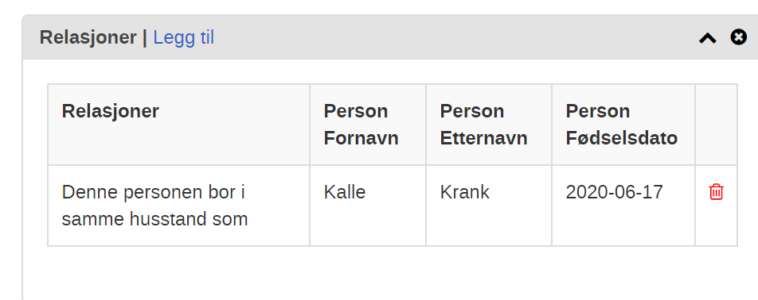
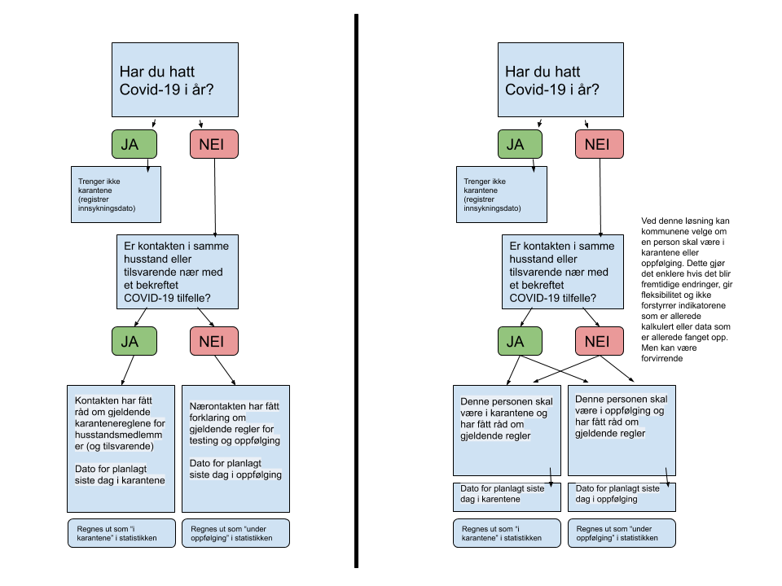
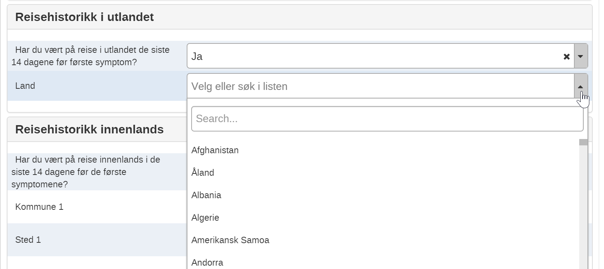
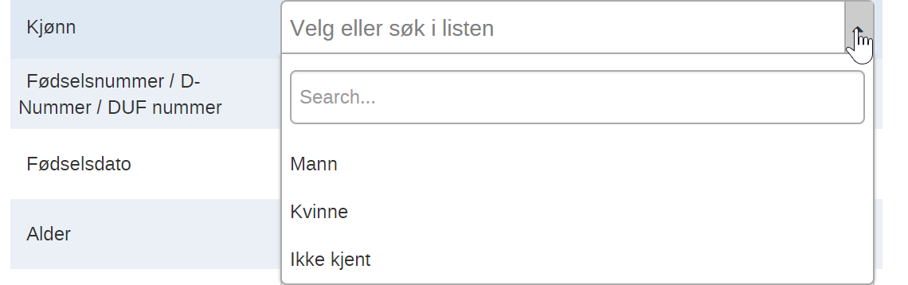

Endringslogg 03.09.2020
Fødselsdato er søkbar og vises i listene -

- Man kan nå søke etter nærkontakter og tilfeller ved å bruke fødselsdato som søkefelt

Etternavn og fødselsdato vises nå i relasjoner

Endret nærkontakt registrering til å tilpasse seg de nyeste regler fra FHI (alle skal i karantene)
Designet gir mulighet til å velge enten karantene eller oppfølging for nærkontakter uavhengig av om de er nærkontakter eller husstandsmedlemmer

Små endringer i tekstene
-Dato for første kontakt med indekstilfelle endret til dato for siste kontakt.
-Tilpasning til de nye karanteneregler
Slettet feltene om Husstand og antall husstandsmedlemer
Reisehistorikk i utlandet har nå et landliste

Alternative Sett “Kjønn” inkluderer nå “Ikke kjent”

Arbeidslistene er endret
“Arbeidsliste for oppfølging av nærkontakter i dag” viser nå alle nærkontakter med en aktiv(ikke fullført) oppfølging, og alle med en oppfølging som er planlagt utført innen dagens dato.
Bredden på søkeresultat modal endret til 75% av skjermen istedenfor 600px
Feil fikset i noen indikator
#78, #84, #127/132
Bug fikset i kontakt registrering
Det var ikke mulig å registrere flere kontakter samtidig på en person av flere brukere.